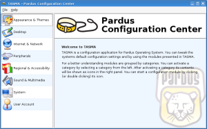
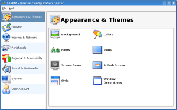
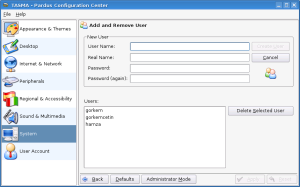
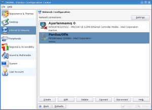

TASMA
TASMA
TASMA is a graphical configuration interface which will work with the infrastructure of COMAR in the future. TASMA also may work with the choosen desktop enviroment KDE by using KControl modules
TASMA is the sum of infrastructure where modules are able to edit the pardus system by requirements , manage and show the modules.
Screenshots
|  |  |
|  |  |
Download
Information and documents on Pardus web pages can be used freely anywhere with original source credit.
For information and suggestion(s) please write to bilgi_at_pardus.org.tr
TÜBİTAK - UEKAE, PK.74 41470, Gebze / Kocaeli.